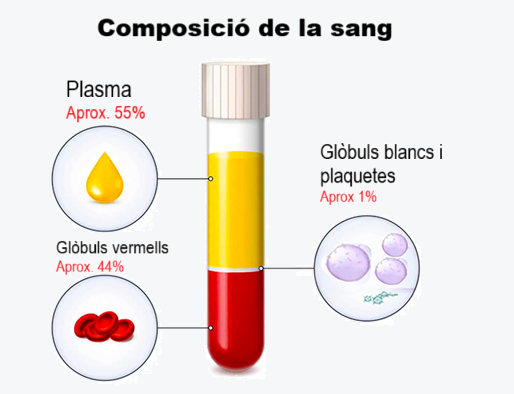

Principis bàsics
| La sang és un fluid corporal especialitzat que té quatre components principals: el plasma, glòbuls vermells, glòbuls blancs i plaquetes. La sang que circula al llarg de les artèries, venes i capil·lars és coneguda com a sang completa- una mescla del 55% de plasma i 45% de cèl·lules. D'entre un 7% i un 8% del pes corporal total correspon a la sang. Una persona de sexe masculí i estatura mitjana (175 a 180 cm) té al voltant de 6 litres de sang, mentre que una dona arriba a tenir uns 4.5 a 5 litres. |  |